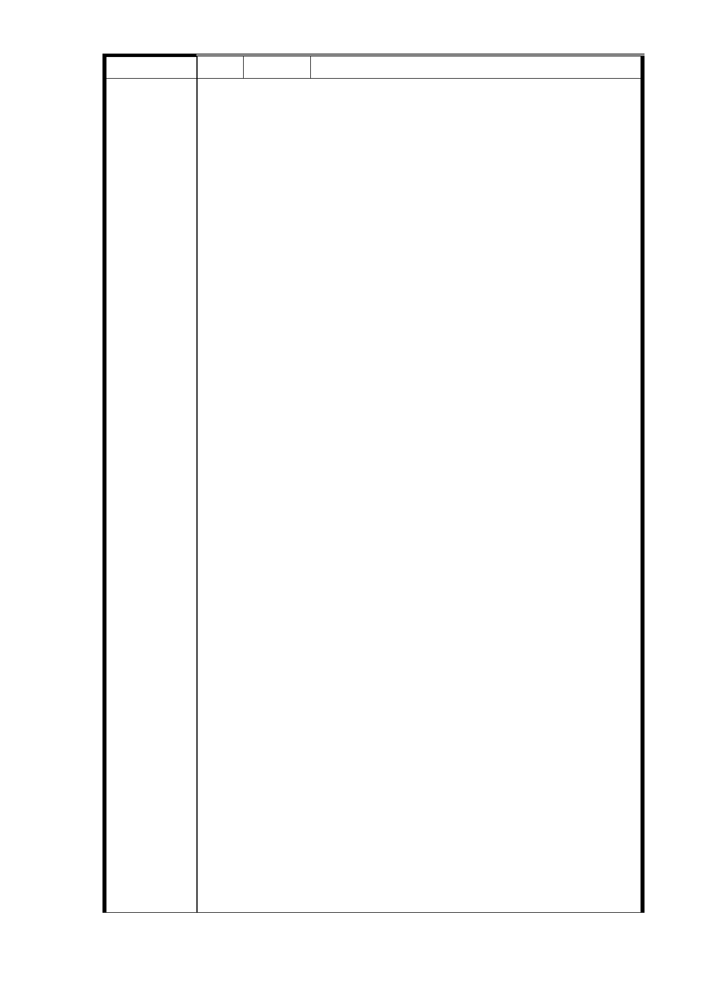

編 號 9-8 陳情人 把明貽（R04 捷二）
主旨：
一、強烈抗議
1.「捷運局」既要捷運信義線 R04 站南側 351 地號七層樓
建物住戶加入「聯開」，非但未能提出更好誘因，反迫使
住戶接受「1 坪換 0.7 坪」之無理對待，致日後無法居住，
更嚴重違反居住公平正義原則。
2.「捷運局」對於住戶所受損害，非但未採妥善有效之救
濟措施補救，反就權益分配問題，推諉責任，置市民權益
於不顧。
二、強烈要求
對於住戶之上述權益分配，應該：
就七層樓建物之現有房屋價值（較周邊四層樓建物高出甚
多）與日後土地所作貢獻，絕不刻意打壓、矮化，並採一
致性分配處理原則，比照現有周邊四層樓住戶之面積分配
結果作為分配（外加一車位）。
說明：
一、「l 坪換 0.7 坪」之無理對待
1.「捷運局」於多次「簡報」中，亦再三提及--若七層樓
建物住戶未能加入「聯開」，除於施工期間必須加強工安
陳 情 理 由 隔離及安全防護補強措施，增加大量建築成本外；更因未
來將成為「凹」字型建物，而嚴重影響房屋外觀、減損價
值，且不利整體建物之規劃與使用。
2.反之，如能將該建物土地納入「聯開」並作整體規劃，
除增進市容美觀，增加未來房屋價值外，更因此可取得與
建商間權益分配之最佳分配比例，同時亦可成為捷運「聯
開案」之優良標竿典範。
3.故「捷運局」基於減少其所受損害與增加其所獲利益，
而極力希望七層樓建物住戶加入「聯開」。
4.另郝龍斌市長亦曾於 100 年 8 月 26 日之座談會中，就本
陳情案件質問「捷運局」與會代表：如果沒有變得更好，
那人家為何要加入（聯開）?
亦即「捷運局」應提出更好之誘因，以鼓勵住戶加入「聯
開」才對！
5.然而，「捷運局」非但未能提供更好之誘因鼓勵住戶加
入，反以「1 坪換 0. 7 坪」作為住戶加入之懲罰，迫使住
戶接受未來「土地持份面積、房屋分配面積」均減少之双
重損害，是何道理？更嚴重違反 郝市長所作之指示！
6.「捷運局」明知住戶不會同意「1 坪換 0. 7 坪」之無理
對待，乃又稱：「現階段如不一併納入聯開，則未來會因
- 51 -